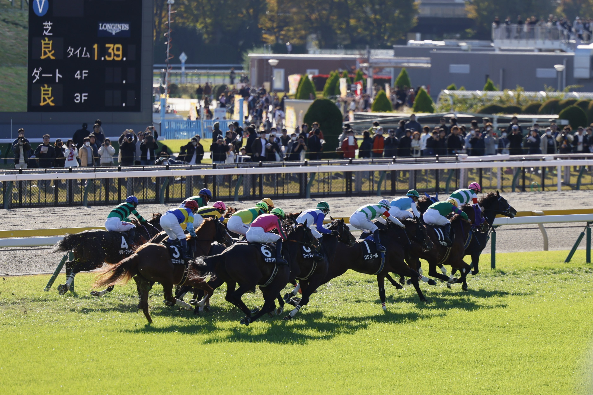
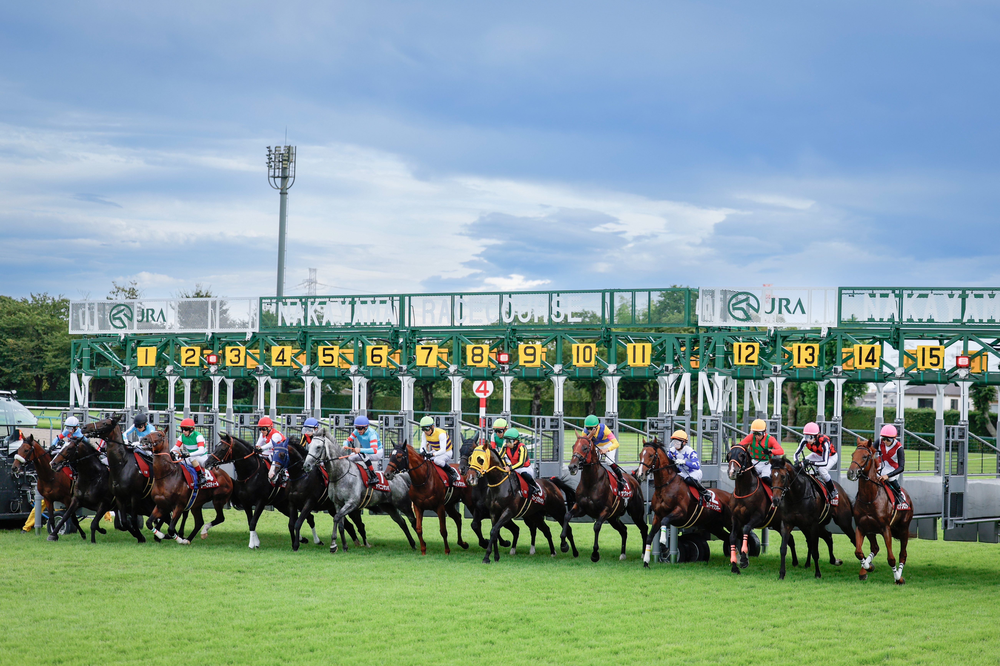
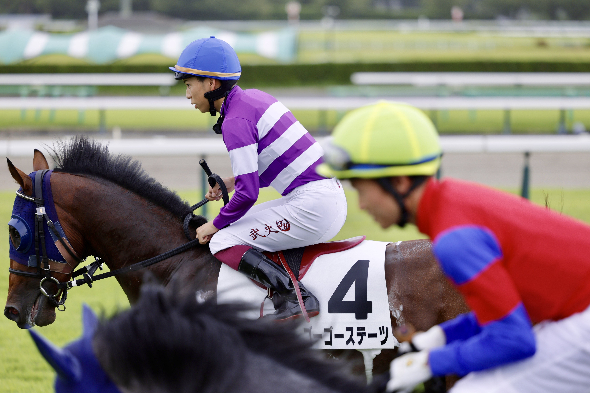
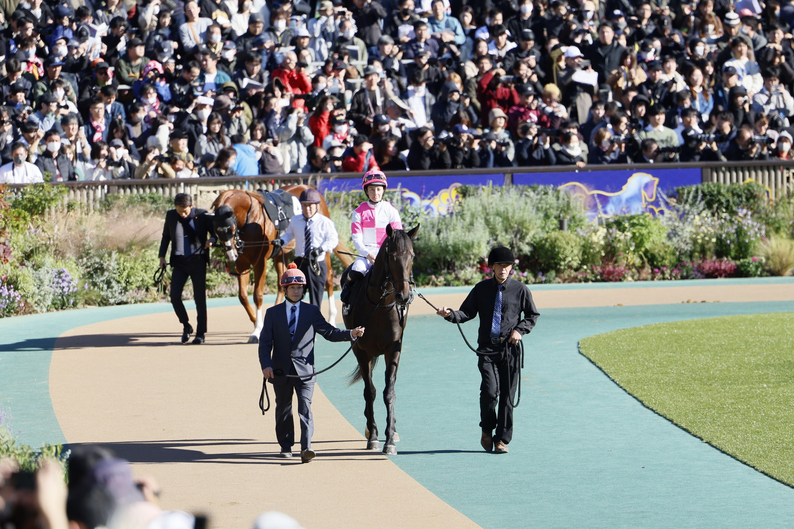
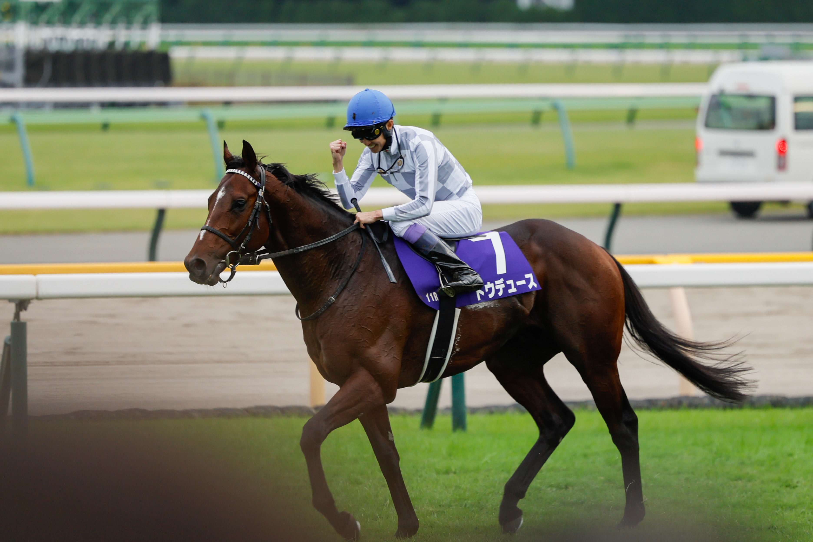

ギャラリー
競馬場で撮影した写真です






競馬時間が幸せ時間
emak3です。競馬歴5年の競馬ファンです。週末はグリーンチャンネルか現地でレース観戦に費やしています。特に当歳馬や1歳馬、新馬戦が好きです。
G1開催日は可能な限り競馬場に足を運び、迫力あるレースを生で観戦することが何よりの楽しみです！！！
このサイトでは私の推し馬や撮影した写真などを紹介しています。
競馬場で撮影した写真です
競馬の話や質問などがありましたら、お気軽にご連絡ください。